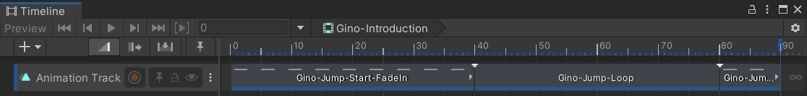
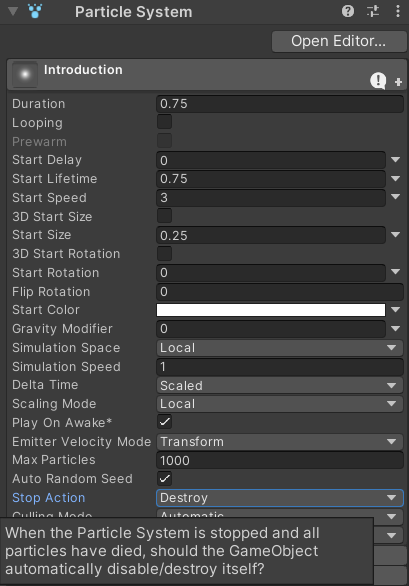

Many games play a special animation to introduce a character when the scene starts which is not used again during regular gameplay. For example, Super Smash Bros. Ultimate:
Those animations could simply be created as a single AnimationClip (per character) so that it can be played like any other or we could use a ClipTransitionSequence to play several AnimationClips in a row, but Unity's Timeline package is a much more powerful tool which creates an asset that Animancer can play using a PlayableAssetState. Instructions for creating Timeline Assets can be found in the Timeline Documentation and the official Timeline Tutorial so it will not be explained here.
Animations
The Timeline used by the Player in the Platformer Game Kit simply uses three AnimationClips one after the other:
- Gino-Jump-Start-FadeIn
- Gino-Jump-Loop
- Gino-Jump-Land
The Particle Effect is separate from the animations and is explained below.

The IntroductionState script can then use a PlayableAssetTransition to play that Timeline Asset like any other Transition.
Script
The IntroductionState script is very simple. It Inherits from the base CharacterState class (which gives it a field to reference the Character) and uses a Serialized PlayableAssetTransition field to reference the Timeline Asset:
public sealed class IntroductionState : CharacterState
{
[SerializeField] private PlayableAssetTransition _Animation;
On startup, it assigns the animation's End Event to return the Character to its default state (Idle) and try to enter this state. This means that other scripts don't need to know whether or not the Character has an IntroductionState. If it has one then it will automatically enter itself, and if it doesn't then the Character script will start in its Idle state when it assigns that as its default state.
private void Awake()
{
_Animation.Events.OnEnd = Character.StateMachine.ForceSetDefaultState;
Character.StateMachine.TrySetState(this);
}
When entering this state, it plays the assigned animation:
public override void OnEnterState()
{
Character.Animancer.Play(_Animation);
}
Nothing can interrupt this state:
public override bool CanExitState => false;
And when the ForceSetDefaultState event (assigned in Awake) gets triggered to exit this state, it destroys the Animancer State used to play the animation because it won't get used again:
public override void OnExitState()
{
Character.Animancer.States.Destroy(_Animation);
}
}
Particles
While the Timeline is playing, a Particle System also plays to show some red orbs rising around the character. Its total duration (Duration + Start Lifetime) is set to match the Timeline Asset and its Stop Action is set to Destroy so that it will automatically destroy its GameObject when it finishes since it won't get used again until we load another scene with the character in it (or instantiate a copy of their prefab). For that reason, the IntroductionState and ParticleSystem are attached to their own GameObject rather than being with the other states.
